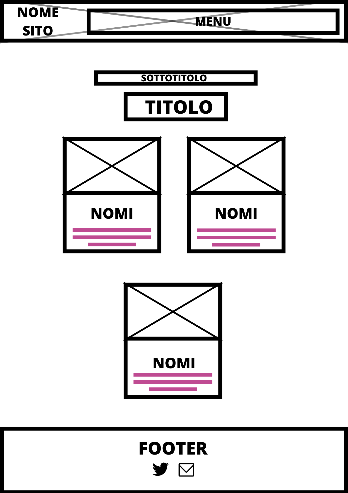
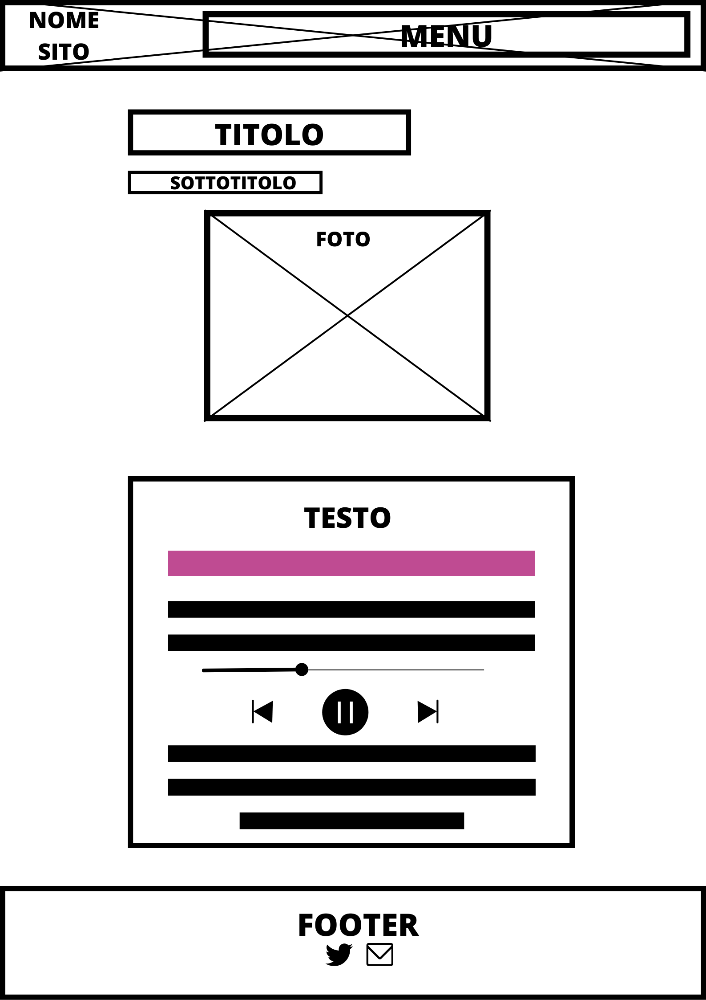

Documentazione
Abstract
Il nostro sito si occupa di raccontare tramite la musica storie riguardanti la vite degli autori delle canzoni. Vogliamo informare i giovani sui dettagli della vita privata delle celebrità, fornendo una prospettiva diversa e mostrandole come persone. Cercando online è facile trovare spiegazioni approssimative, ma su Find Your Drama scendiamo nel dettaglio, analizziamo canzoni che potresti non conoscere ma rilevanti per la comprensione totale della storia.
Benchmarking
Obbiettivi
Gli obbiettivi sono: creare un sito in cui è possibile trovare articoli che parli del dramma legato a persone famose, scendendo nei dettagli e citando delle loro canzoni così da poterne capire meglio il pensiero; far conoscere brani meno famose, attirando l’attenzione attraverso del gossip.
Target utente
Il sito è indirizzato soprattutto ai giovani, interessati ai social e alla vita delle celebrità.
Competitors
Per quanto riguarda i competitors non ci sono siti italiani che si dedicano esclusivamente a raccontare storie di celebrità tramite la musica; tuttavia, ci sono pagine che trattano di gossip in generale e che quindi potrebbero essere confrontate.
Per esempio, Grazia.it scrive vari articoli su moda, bellezza, news. Tratta anche di temi con contenuto simile al nostro, anche se in modo più ampio, e si concentra principalmente sulle novità del momento.
Genius.com, invece, è un sito che si occupa di spiegare le singole canzoni, analizzando il possibile significato dei versi; lo fa anche in modo interattivo perché gli utenti iscritti possono aggiungere spiegazioni ai brani.
Struttura e Layout
Architettura
Wireframe
Home
Drama
Articoli
Pagina Contatti

Quiz
Look and feel
Il font utilizzato per tutti i titoli principali è 'Silkscreen', mentre per i sottotitoli viene utilizzato 'VT323'. Infine, per i testi lunghi ho utilizzato un sans-serif che aumenta la leggibilità, cioè: 'Tomorrow’.
La palette di colori si basa principalmente su #FF00BB , un fucsia, e attraverso adobe color ho trovato un suo complementare #B30083 , che è un viola scuro. È anche presente l’utilizzo del colore nero.
La pagina è progettata in modo tale che l’attenzione vada subito al titolo del sito e poi al menù di navigazione, dove si può trovare tutto quello di cui si ha bisogno. Lo sfondo del sito dovrebbe rappresentare una vecchia televisone, che è in rewind per mostrare storie passate.
Linguaggi e Strumenti
Linguaggi
Html
Css
Javascript
Strumenti
Visual studio code come editor
Google fonts per i font dei testi
Adobe color per la palette di colori
Font Awsome per le icone
Canva per progettare il logo, modificare il video e le foto per la pagina, il wireframe e l’architettura del sito
Favicon per il logo
Pixels, Wikimedia commons e Flickr per video e foto
Google Analytics per monitorare le visualizzazioni
Github per la pubblicazione
Twitter come social del sito
Gmail per l’e-mail del sito
Spotify per la musica
Strategy Communication Plan
Background
Su Grazia.it è possibile trovare articoli con temi simili ai nostri ma che vengono discussi in modo più ampio, quindi informazioni, che sul nostro sito è possibile trovare in una pagina, su Grazia vengono raccolte in più articoli. Per questo, una persona giovane che vuole informarsi velocemente su un determinato argomento, acquisendo tutte le informazioni più importanti, può farlo facilmente con noi.
Genius.com è un sito che spiega le singole canzoni nel dettaglio, ma non offre un discorso lineare che colleghi un brano all’altro. Quindi, non è possibile comprendere la storia completa, ma solo capirne alcuni pezzi.
Inoltre, nessuno di questi due siti offre un quiz, che è visto come un modo per intrattenere l’utente e portarlo a leggere altri articoli.
Obbiettivi comunicativi
Il mio obbiettivo è quello di, invogliare le persone ad entrare nel sito, ma soprattutto intrattenere gli utenti tramite i contenuti e la scrittura leggera, così da incitarli a restare sul sito. Quindi, punto a raggiungere almeno 50 visualizzazioni al sito, e che la durata di sessione media sia abbastanza per leggere almeno un articolo, quindi, intorno ai 5 minuti.
Target utente
Il nostro target sono ragazzi dai 13 anni in su, interessati al mondo social, che attraverso questi sono un pubblico facilmente raggiungibile, perciò ho creato un profilo Twitter. Inoltre, per intrattenere i giovani ho inserito anche un quiz, i cui risultati sono canzoni che è possibile trovare negli articoli, così da invogliare la lettura.
I nostri articoli, che poi aumenteranno col tempo, parlano sia di eventi passati che cose relativamente attuali; quindi, puntiamo sia ad informare i giovani su cose che potrebbero non sapere, sia fornirgli maggiori informazioni su avvenimenti recenti.
Promozione
La maggior parte della pubblicità avverrà tramite Twitter, che è un social in cui le persone si raggruppano per interessi comuni, ed è quindi facile individuare le persone a cui potrebbe interessare il contenuto del sito, e che potrebbero condividerlo tra loro.
Valutazione dei Risultati
Per verifica i riultati comunicativi ho utilizzato Google Analytics.